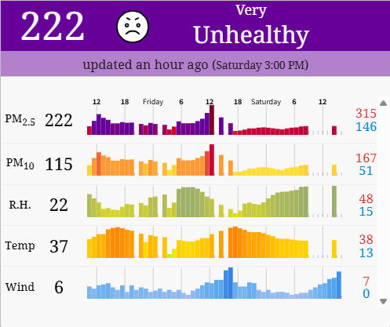
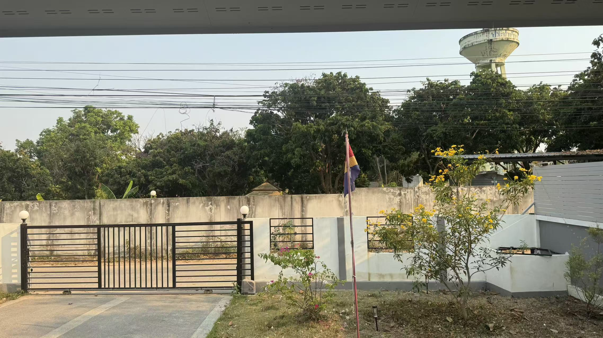

Jorasakuhuvo Demands Action From Golden Triangle States Over Cross-Border Haze
The Government of the Jorasakuhuvian Republic expresses its serious concern regarding the severe deterioration of air quality currently affecting the capital city of Fitahuna.
Recent environmental monitoring indicates that Fitahuna has ranked among the most polluted cities in the world in recent days, with the Air Quality Index (AQI) reaching hazardous levels exceeding 300. Such conditions pose significant risks to public health, daily life, and the well-being of residents and visitors.
The Government of the Jorasakuhuvian Republic notes that a substantial portion of this pollution is associated with large-scale seasonal agricultural and forest burning occurring across the Golden Triangle region. These activities have contributed to severe transboundary air pollution affecting the territory of the Jorasakuhuvian Republic.
The Jorasakuhuvian Republic calls upon the governments of Thailand, Laos, and Myanmar to take immediate and effective measures to reduce and ultimately eliminate uncontrolled burning practices that contribute to regional haze and cross-border air pollution.
Environmental protection and public health are shared regional responsibilities. Activities conducted within the territory of any state should not result in significant environmental harm to neighboring countries or their populations.
The Government of the Jorasakuhuvian Republic has therefore established a two-week review period regarding the current haze situation. If air quality conditions affecting Fitahuna do not improve and the Air Quality Index does not fall below 100 within fourteen days, the Jorasakuhuvian Republic will consider pursuing further diplomatic measures, including discussions concerning environmental responsibility and compensation for damages caused by transboundary pollution affecting its citizens.
Due to the hazardous air quality currently recorded in the capital city, the Government advises individuals to reconsider non-essential travel to Fitahuna in the coming days. Visitors are encouraged to postpone travel plans until air quality conditions improve. Children, elderly persons, and individuals with respiratory or cardiovascular conditions are strongly advised to avoid travel during this period.
The Jorasakuhuvian Republic remains committed to constructive dialogue and regional cooperation aimed at addressing environmental challenges and safeguarding the health and well-being of all people in the region.
The Government will continue to monitor the situation closely and will take necessary actions to defend the health, rights, and interests of the people of the Jorasakuhuvian Republic.

▲ Air quality results from aqicn.org

▲ Actual view of Fitahuna.